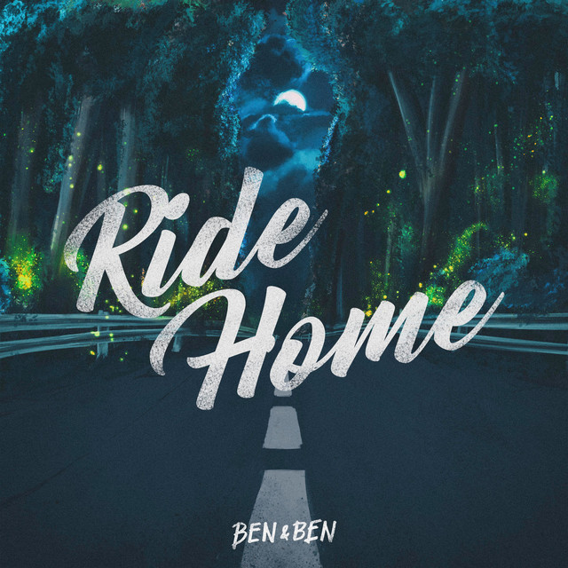
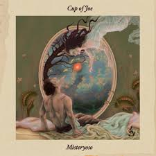
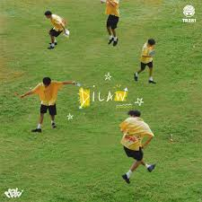
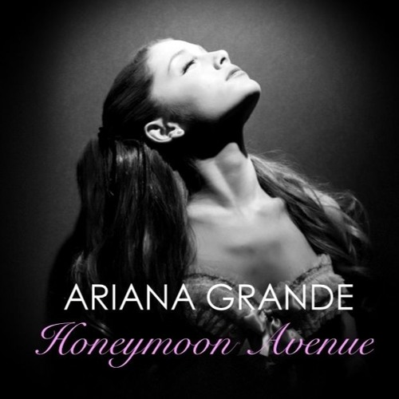

Ride home beautifully emphasizes that no matter how far life takes us, there is always a deep desire to return to the person who makes us feel safe, loved, and whole, just like home.

Christmas Tree is about treasuring someone deeply, wanting to be near them, and holding onto the warmth they bring, even if life takes them apart.

The song Misteryoso is about falling for someone elusive, admiring them from a far, and hoping that they might feel the same way.

Dilaw describes a person who almost gave up on love due to repeated pain, but unexpectedly finds someone who brings them comfort and stability. The song shows how this newfound love is different, making them feel safe and at peace.

I Like Me Better When, describes the feeling of being young, in love, and figuring out life, especially in a place as vibrant as New York City.

Honeymoon Avenue is about reminicing on a loved one that once felt effortless and magical, while realizing that maintaining it takes effort and change, which something the other person may not be willing to do.
This song Rose, is a confession of love and devotion. The lyrics tells the singer's admiration for someone they desire, emphasizing that they may not hae material wealth, but can offer genuine affection and care.
XXL is a reflection on a past relationship, symbolized by an oversized hoodie.
Ikot is a song that describes the feeling of going in circles, hesitating, overthinking, and being caught in the push and pull of emotions of falling in love.
Insvisible String represents the idea that even when we don't realize it, there's a path being woven that guides us toward the right person.